Da solicitação à leitura do resultado: transformar uma rotina contábil complexa em decisões de interface explícitas.From requesting a statement to reading the result: translating a complex accounting workflow into explicit interface decisions.

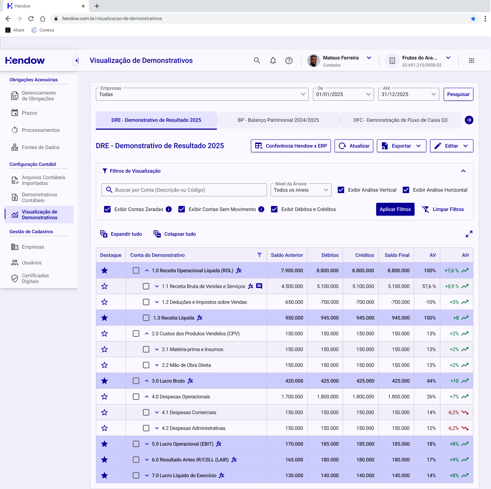
Narrativa baseada nas telas, notas e regras do arquivo “Demonstrativos Contábeis (N2)”. As imagens são do design original; os números exibidos nas telas não representam resultados do projeto.This narrative is based on the screens, notes and rules in “Demonstrativos Contábeis (N2)”. Images show the original design; numbers in the screens are not project outcome metrics.
O desafio: clareza em uma rotina de alta densidade
Demonstrativos contábeis exigem leitura de hierarquias, comparação de valores e compreensão de cálculos. No Hendow, o desafio de design foi organizar essas tarefas em uma experiência que preservasse o contexto da empresa, do período e da conta analisada. O arquivo reúne DRE, Balanço e outras visualizações, além de um construtor de fórmulas para contas calculadas.
Das primeiras explorações à entrega
As notas da reunião de 09/10/2025 registram necessidades concretas: árvore de contas, linhas alternadas, destaque para contas principais, identificação de fórmulas, primeira coluna fixa, personalização de colunas, comentários e análises horizontal e vertical. As explorações investigam um configurador em cinco etapas, visualizações gráficas e indicadores. A área de entrega concentra a jornada de solicitação e leitura, os estados de interação e o construtor de fórmulas. Essa distinção orienta a narrativa: uma exploração não equivale a uma funcionalidade implementada.

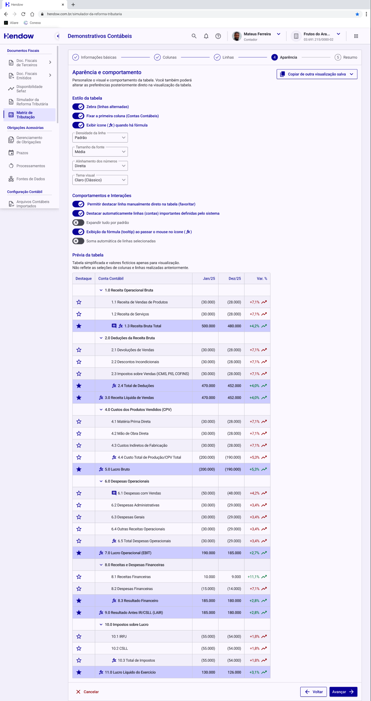
Uma entrada que orienta a próxima ação
O estado vazio explica por que não há demonstrativos e oferece a ação “Solicitar Demonstrativo”. A solicitação reúne empresa, filial, ambiente, período, demonstrativo e modelo de impressão. A opção de considerar lançamentos de encerramento aparece quando há um demonstrativo do tipo DRE selecionado e vem marcada por padrão. Nos rascunhos, uma alternativa posterior explora ano e tipo de período, exibindo o período de referência apenas quando necessário.

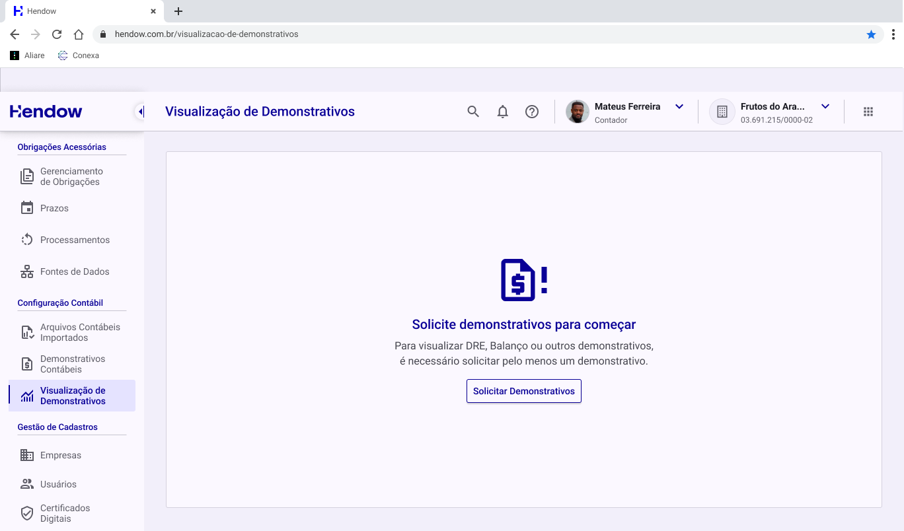

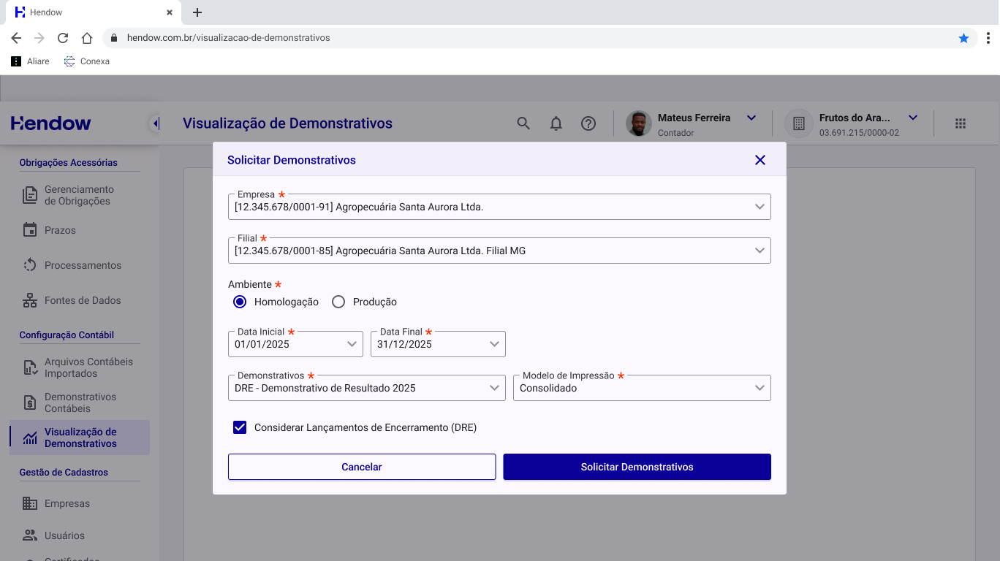
Acompanhar o processamento antes da análise
A lista de demonstrativos gerados permite localizar solicitações por nome, empresa, tipo e situação. As colunas de criação e atualização tornam o histórico visível; os estados “Processando” e “Finalizado” distinguem a disponibilidade do documento. A seleção de demonstrativos conecta essa etapa à visualização.

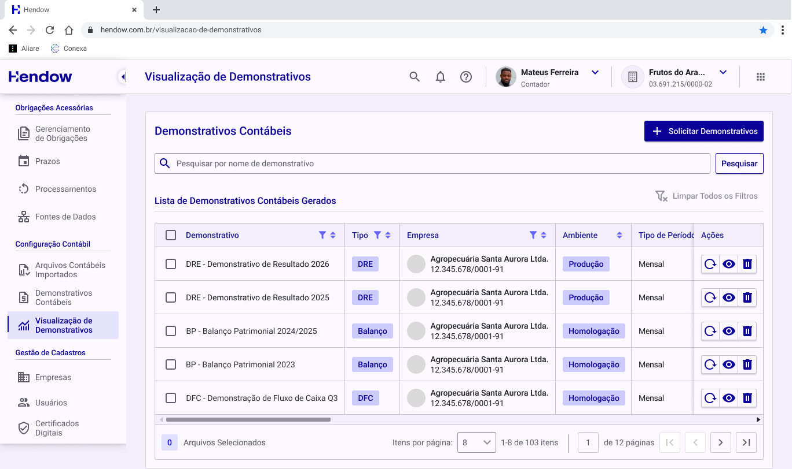
Uma tabela que preserva estrutura e foco
A hierarquia é apresentada por recuos e controles de expansão. O filtro de nível limita a profundidade visível sem alterar valores ou totais. Linhas alternadas ajudam a acompanhar a leitura, e o destaque por estrela evidencia contas escolhidas. Ícones indicam fórmulas e comentários; as análises vertical e horizontal podem ser exibidas conforme a tarefa. A tabela em tela cheia amplia o espaço de análise sem acrescentar outra camada de navegação.

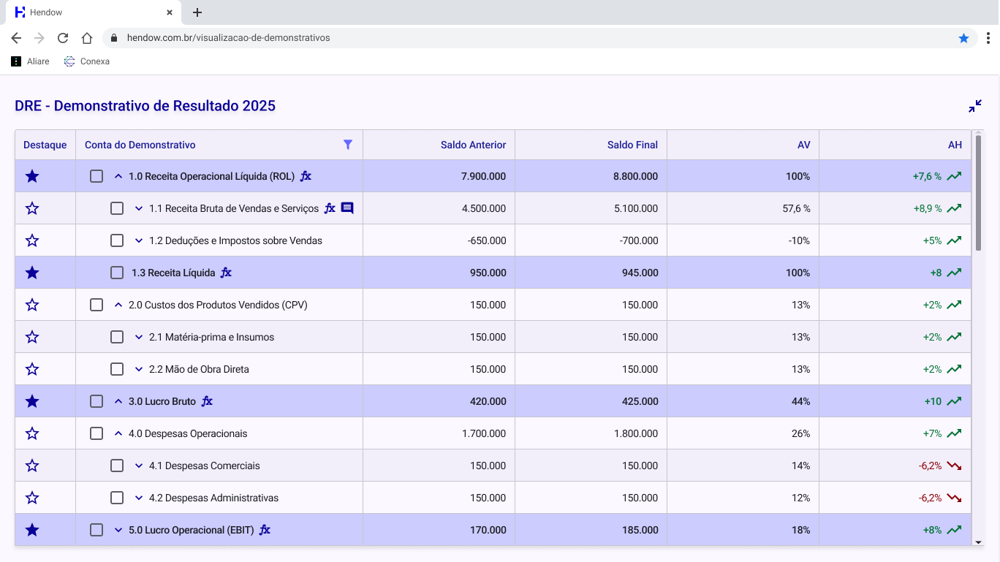
Ações que acompanham a seleção
Com uma linha selecionada, a interface oferece exportação, comentário e detalhes da conta. Para múltiplas linhas, há totais consolidados e exportação da seleção. Os detalhes preservam o período, a natureza da conta e a fórmula. As abas alternam entre demonstrativos; as setas servem apenas para navegar pelas abas disponíveis. Comparar seleções está explicitamente indicado como evolução futura do MVP.
Contexto compartilhado, permissões explícitas
Comentários ficam associados à conta e podem notificar pessoas. A notificação leva à visualização do comentário; apenas o autor recebe ações de editar e excluir. Quando não há permissão para editar o demonstrativo, o botão permanece visível e desabilitado, acompanhado de uma explicação. Assim, a interface comunica que a ação existe e esclarece a restrição de acesso.

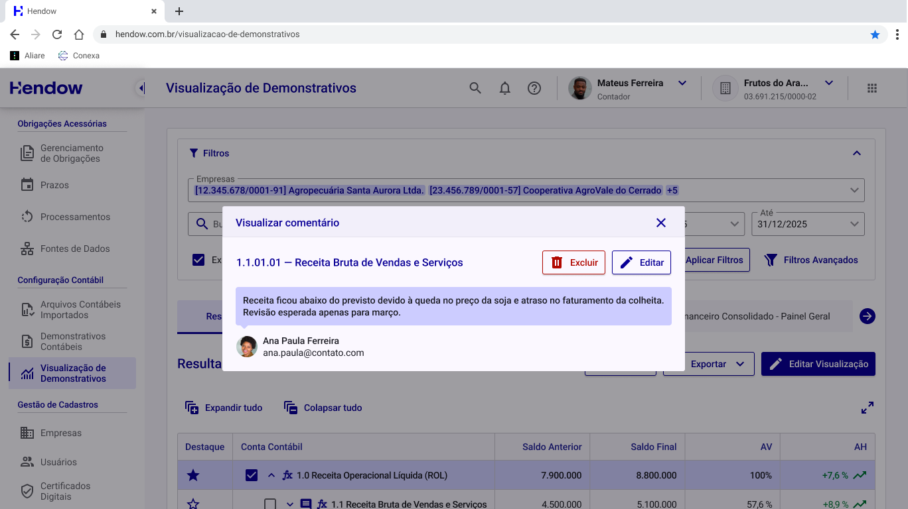
Construir cálculos com retorno imediato
O construtor separa a árvore de contas da área da fórmula. A pessoa seleciona contas, combina operações e adiciona parênteses. Os elementos entram na sequência dos cliques, preservando a ordem de construção. A validação diferencia fórmula vazia, operação incompleta, fórmula válida e erros específicos. Mensagens explicam operadores em sequência, operação no início ou no fim, parênteses sem correspondência e divisão por conta sem valor. Nos estados inválidos, aplicar fica desabilitado e há opção de salvar rascunho.

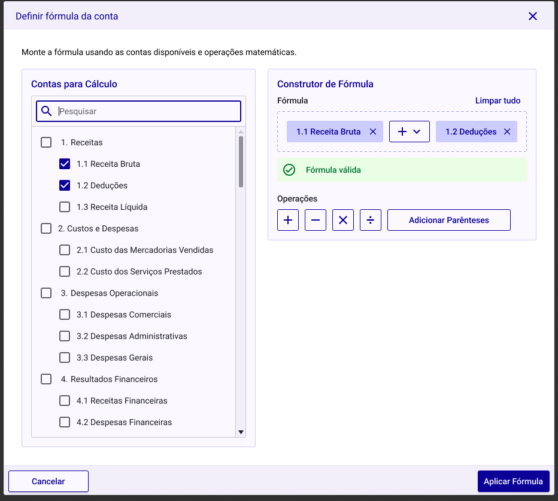

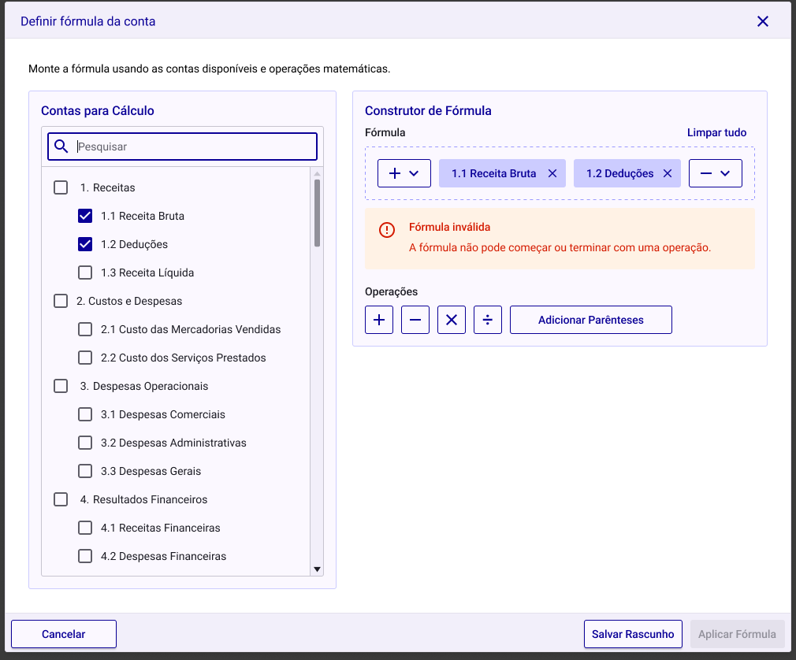
Fórmulas longas sem perder a leitura
A documentação escolhe quebra de linha no lugar de rolagem horizontal para fórmulas longas. A intenção é manter a hierarquia dos parênteses legível e facilitar a identificação de erros. A largura mínima documentada da modal é 920 px: trata-se de uma solução de desktop, sem evidência de um fluxo mobile no arquivo.

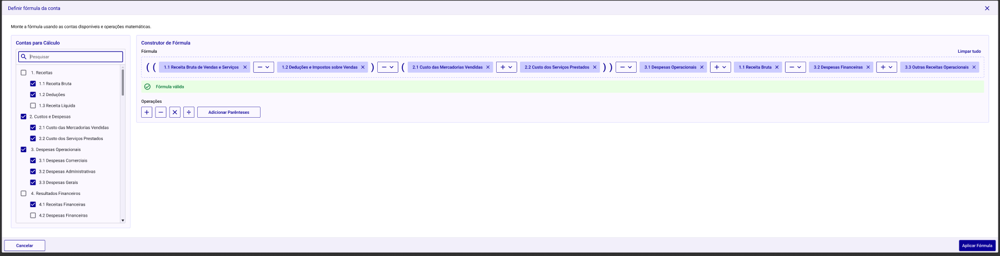
Escopo, entrega e próximos passos
O resultado documentado é uma especificação de interface com estados, regras de comportamento e orientações para desenvolvimento. A capa do arquivo marca a demanda como “Entregue”, atualizada em 30/12/2025. Isso registra o status do design, sem comprovar lançamento ou resultados em produção. Os rascunhos incluem relatórios contábeis, configuração em etapas e gráficos; a comparação de seleções é reservada à evolução do MVP. Não há métricas de impacto ou testes com usuários documentados neste arquivo. Uma próxima validação poderia medir conclusão da solicitação, compreensão dos filtros e recuperação de erros no construtor.

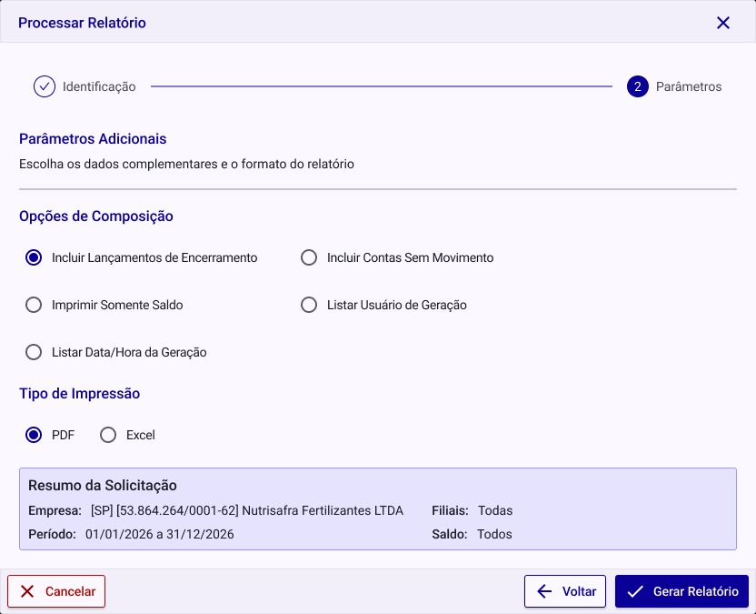
O que este projeto evidencia
Em produtos com alta densidade de informação, a clareza depende tanto da organização visual quanto das regras de interação. Hierarquia de contas, seleção contextual, explicação de permissões e mensagens de erro trabalham juntas para tornar a operação compreensível. O case evidencia design de interação, arquitetura de informação e detalhamento de estados para uma rotina contábil complexa.
The challenge: clarity in a data-dense workflow
Financial statements require reading hierarchies, comparing values and understanding calculations. In Hendow, the design challenge was to organize those tasks while preserving the context of the company, reporting period and account being analyzed. The file covers income statements, balance sheets and other statement views, alongside a formula builder for calculated accounts.
From early explorations to handoff
Meeting notes dated October 9, 2025 document concrete needs: an account tree, alternating rows, emphasis for key accounts, formula indicators, a fixed first column, column customization, comments, and horizontal and vertical analysis. Explorations investigate a five-step configuration flow, charts and indicators. The handoff area focuses on requesting and reading statements, interaction states and the formula builder. An explored concept is treated separately from an implemented feature.
An entry point that explains the next step
The empty state explains why there are no statements and offers a request action. The request brings together company, branch, environment, reporting dates, statement and print model. The closing-entry option appears when an income statement is selected and is checked by default. A later draft explores year and period type, showing the reference period only when needed.
Track processing before analysis
The generated-statement list helps locate requests by name, company, type and status. Creation and update columns expose the history, while processing and completed states distinguish document availability. Statement selection connects this stage to the analysis view.
A table that preserves structure and focus
Indentation and expansion controls communicate the account hierarchy. The level filter limits visible depth without changing values or totals. Alternating rows support scanning, and star markers emphasize selected accounts. Icons identify formulas and comments; vertical and horizontal analysis can be shown as needed. Full-screen mode gives the table more space without adding another navigation layer.
Actions that follow the selection
Selecting one row exposes export, comment and account-detail actions. Multiple-row selection supports consolidated totals and selection export. Account details retain the period, account nature and formula. Tabs switch between statements; arrows only navigate the available tabs. Comparing selections is explicitly identified as a future MVP enhancement.
Shared context and explicit permissions
Comments stay attached to an account and can notify other people. Notifications lead back to the comment, and only the author receives edit and delete actions. Without permission to edit a statement, the edit button remains visible but disabled, with an explanation. This communicates both the available capability and the access restriction.
Build calculations with immediate feedback
The builder separates the account tree from the formula workspace. Users select accounts, combine operations and add parentheses. Elements appear in click order, preserving the construction sequence. Validation distinguishes an empty formula, an incomplete operation, a valid formula and specific errors. Messages explain consecutive operators, operators at the beginning or end, unmatched parentheses and division by an account with no value. Invalid states disable applying and offer a draft-saving action.
Long formulas without losing readability
The documentation chooses line wrapping rather than horizontal scrolling for long formulas. The intent is to keep parentheses readable and make errors easier to identify. The documented minimum modal width is 920 px: this is a desktop solution, with no mobile workflow evidenced in the file.
Scope, handoff and next steps
The documented output is an interface specification with states, behavioral rules and development guidance. The file cover marks the request as delivered, updated December 30, 2025. This records design status rather than proving a production launch or impact. Drafts include accounting reports, step-by-step configuration and charts; selection comparison is reserved for a future MVP evolution. No impact metrics or user tests are documented in this file. Future validation could measure request completion, filter comprehension and recovery from formula errors.
What this project demonstrates
In information-dense products, clarity depends on both visual organization and interaction rules. Account hierarchy, contextual selection, permission explanations and error messages work together to make the workflow understandable. This case demonstrates interaction design, information architecture and state specification for a complex accounting workflow.